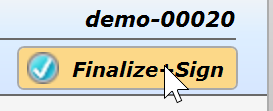
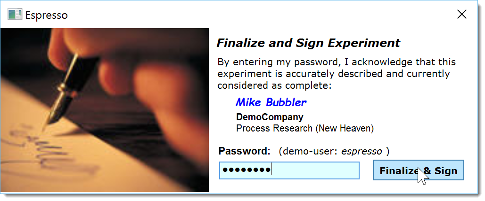
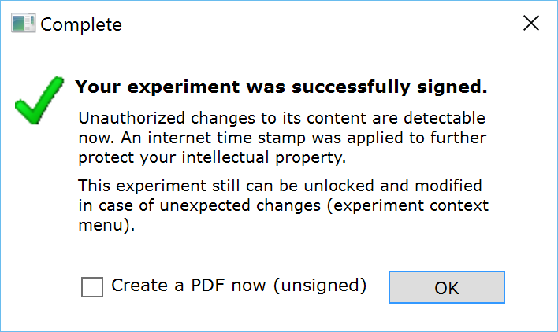
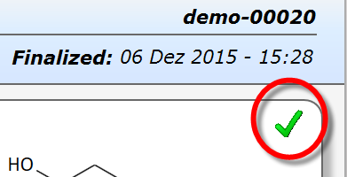
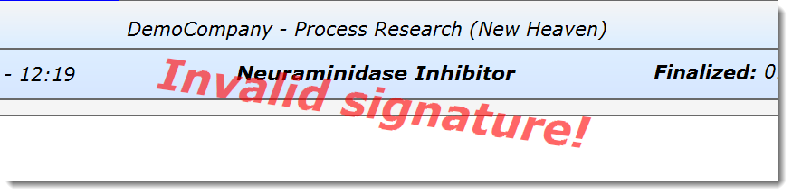

12) Sign Experiment
Finalizing an experiment has two effects in Espresso ELN: A digital signature is applied to it to ensure strong intellectual property protection for you and your organization. And since finalized experiments are locked, this also prevents you from accidentally entering data in an already finalized experiment, e.g. in a series of similar experiments.
Since the finalization of experiments is of high importance, unfinalized experiments are sticky: They continue to be present in your experiments tab until they are finalized. Although they can be removed during the current session, they are re-appear when running the application the next time.
Since the finalization date is part of the digital signature, it is highly important that you finalize your experiments immediately after completion – which is nothing else than clicking a button in Espresso ELN:
- Click the "Finalize+Sign" button in the upper right corner of the experiment.
 - When the signature dialog appears, enter your personal password ('espresso' for the strong>demo user, or the password assigned when you created a new user for yourself).

Please note that it is neither the password, nor agreeing to the dialog text which actually protects your experiment. At the core, it is a built-in 1024 bit RSA key creating the digital signature, also taking into account a current Internet timestamp and your network machine name. The password just ensures that no one else digitally signs your experiment.
- A dialog confirming successful signature appears. If the Create a PDF checkbox is checked, a PDF document of your experiment is optionally created for your own records.
 - When finalized and signed, the red experiment bullet in the experiment tree is replaced by a blue checkmark. Additionally, finalized experiments are marked by a green checkmark in the top right corner of the reaction sketch area. Finalized and signed experiments always are read-only. They, however, can be reopened under event tracking from the experiment tree context menu, for applying controlled post-signature changes before re-signing.
 - A digital signature is useless without a way to determine its validity. In Espresso ELN this validation is straightforward: Whenever a finalized experiment is opened, the validity of its digital signature is checked. If it should have become invalid, e.g. after unauthorized changes after signature, a red "Invalid signature" stamp will appear across its header:

Important: Above out-of-the-box digital signature protection may fulfill the requirements of most organizations. It should, however, be verified if additional measures are required for compliance with the individual intellectual property (IP)-requirements, which may vary by organization and country.
Next step: Create a Unique User ...